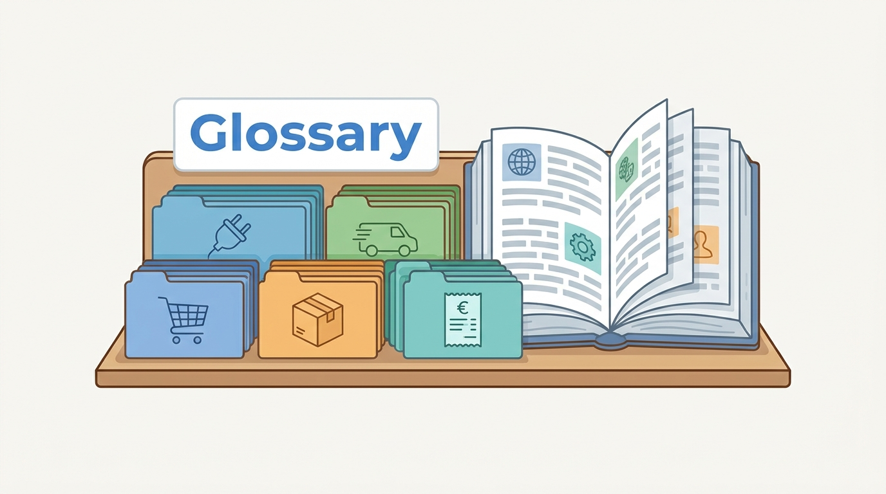

Reference
Glossary: Plain-Language Definitions
AI-assisted: researched and written with Claude Code, images generated with the Gemini API. How this works

Reference
AI-assisted: researched and written with Claude Code, images generated with the Gemini API. How this works
